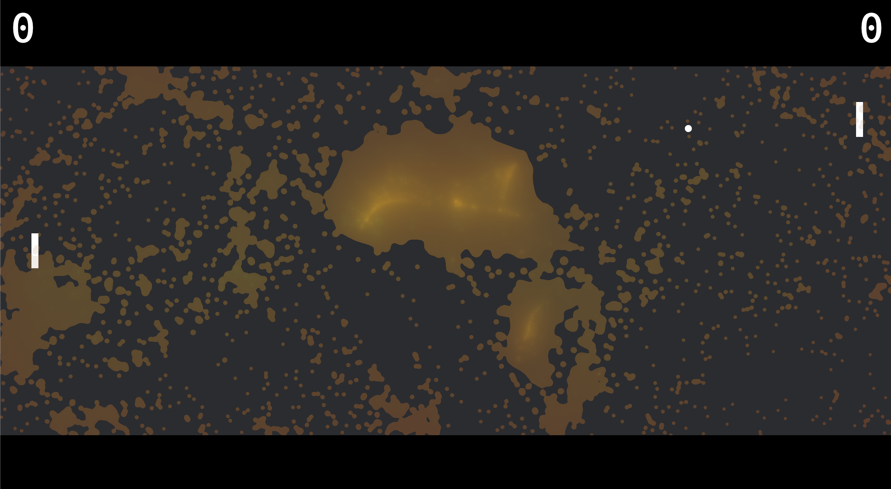

Link to slides: https://docs.google.com/presentation/d/1c8SNqwCMYDlIjJLUUo8TMi4K9p8eQGq_Rw8kTFmvSWY/edit?usp=sharing

We implemented a simplified FluidPong in Rust!
| FluidPong | Metaball Shader |
Currently, ball applies force on fluid but not vice versa. We are currently using Smoothed-Particle Hydrodynamics (SPH) with a metaball shader, with color based on speed and opacity based on density.
The challenging part of this project of course is not Pong, but making the Fluid look more interesting. Now that we are more familiar with writing graphics in Rust, we wish to try implementing a more advanced fluid such as Naiver-Stokes, or potentially simulating 3d and projecting onto 2d.